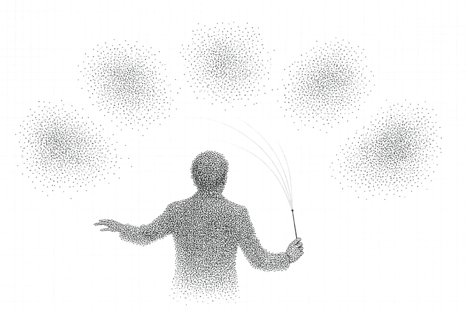
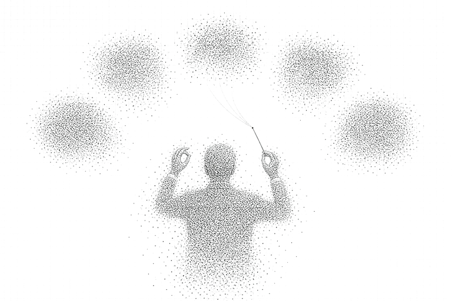
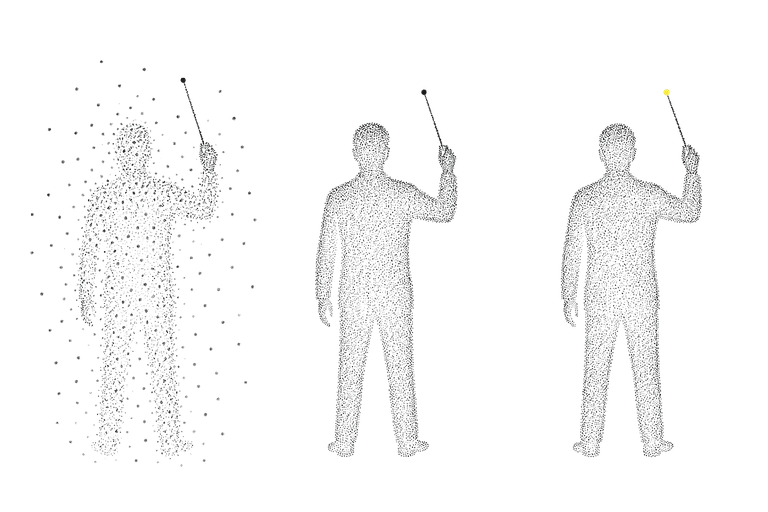

Hold the thought.
Gather the work.
Fermoa is an AgentOS where agents think through and execute real enterprise work. Work does not live in a “done” state. It lives in the moment of thinking.
We do not believe an agent that says “done.” Only what is being thought through and verified right now is real.
Work does not end; it flows. We hold the moment where that flow gathers into a single point.
At that point a person understands and an agent executes. That is Fermoa.
AgentOS
Five layers make one operating system. Each can be adopted on its own; together they verify each other.
-
Agent runtime
A runtime that carries a one-sentence instruction through to the end. Agents are defined as skills, and everything they judged and did stays on the record.


-
Contract layer
Campaigns, metrics and budgets are written down as contracts first. Policy, approval and rollback run on top of them, so people know what an agent must not cross before it runs.


-
Pipeline
Rulepacks decide, incremental checks verify. Only what changed is recomputed, so it stays light enough to run every day and shows exactly what differs from yesterday.


-
Model gateway
One OpenAI-compatible endpoint. Keys and budgets, routing and fallback, token metering, all in one place, with every request kept on tape.


-
Edge agent
Intent is inferred on the device. With a 4-bit quantized SDK and federated learning, data never leaves the phone; the server only receives what was learned.


Agentic Operations
We start where operational complexity is high and context matters. Five areas run on the same runtime and the same contracts.


Company operations
Employment contracts, payroll close, social insurance, statutory duties, from a single sentence.
Media
Naver, Kakao, Google and Meta channels run autonomously under contracts and approvals.
Commerce
Shopper intent turned into transactions, on the merchant’s side of the glass.
Growth
D2C repeat purchase, subscription conversion and influencer group buys, run by an agent.
Discovery
Visibility, citations and recommendation probability inside AI answer engines, measured and steered.
Capability atlas
Four engine families we built and measured ourselves. Every one is a tool an agent calls from chat.
Scheduling and assignment
Nurse rosters, call-center staffing, league fixtures, room assignment, crew pairing, school timetables, live dispatch. State the constraints in chat; a constraint solver returns the table.
Vision and signal judgment
Surface-defect inspection, RF interference diagnosis, device fingerprinting, machine acoustics and vibration, WiFi presence. A nine-stage receiver built in-house; judgments in real time.
Documents, knowledge, support
Document recognition and entry, automated customer replies, internal knowledge search. Agents absorb 60 to 70 percent of repeat inquiries.
Demand and business data
Management dashboards, demand forecasting and reorder simulation, sales-signal radar. Situational awareness goes from half a day to instant.
Press the agent
Not a script: a replay of real executions. Four runs recorded on 4 September 2026 in growth-commerce-os against Mildo Bakery (a fictional company on synthetic data), replayed in the order they happened, thinking, tool calls, and the pause for approval. The model is Qwen3.8-27B on our own cluster. Recordings are in Korean.
What you are looking at
- Thinking
- What the model said to itself. Folded away; open it to read it verbatim.
- Tool
- A function it actually called, with the input and the output it got back.
- Card
- A tool result turned into a table, a plan, or a chart.
- Approval
- Anything leaving the company stops until a person presses. Press it yourself.
- Next
- Three follow-up questions the agent proposes at the end of a turn.
Synthetic data, so no customer here is real, and the send is a mock.
Use Cases
Instead of explaining, press. 76 demos across seven families run in the browser, and the agent calls them as tools.
Scheduling and assignment
State the constraints and a solver returns the table. A feasible answer is guaranteed before optimality is chased.
Documents, knowledge, support
Reads and files documents, answers inquiries, finds internal knowledge with citations. Agents absorb 60 to 70 percent of repeat questions.
Demand and business data
Management status, demand forecasting and reorder, sales signals. Situational awareness from half a day to instant.
Vision and signal judgment
Receivers and inspectors built from antenna to verdict. Judgments in real time, evidence attached.
Work agents
Decomposes one sentence and calls the engines above as tools. Code decides, people approve.
Model serving and cost
Self-hosting break-even, VRAM, quantization, routing. The calculators behind what the model gateway chooses.
Media and content generation
Ad video, shorts, characters, voice. The creative the media-ops agent will run, made inside the same OS.
Running in the field
Demos that became products, with measurements and current state.
Mildo Bakery, D2C growth
Fictional brand, synthetic data, owner approval required
Cafe24 merchants, agentic commerce
Cafe24 today; Shopify and UCP/ACP next
Performance agencies, media operations
Plan 에서 approve 에서 execute 에서 verify 에서 rollback e2e passing
Payroll close and social insurance
In build: foundation and loop done, payroll domain is the next track
AI visibility
Phase 0; absorption analyzer precision 1.000 / recall 0.750
Privacy-preserving ads
DIPS 2026; gates 8/8 PASS
RF interference diagnosis
Measured on synthetic benches; field data pending
Nurse roster scheduling
Measured against public NRP benchmarks
Insights
Written only from experiments and measurements.
Give an agent real work.
Whether you are evaluating an AgentOS, redesigning a workflow, or attaching agents to the operations you already run, we go from experiment to execution with you.